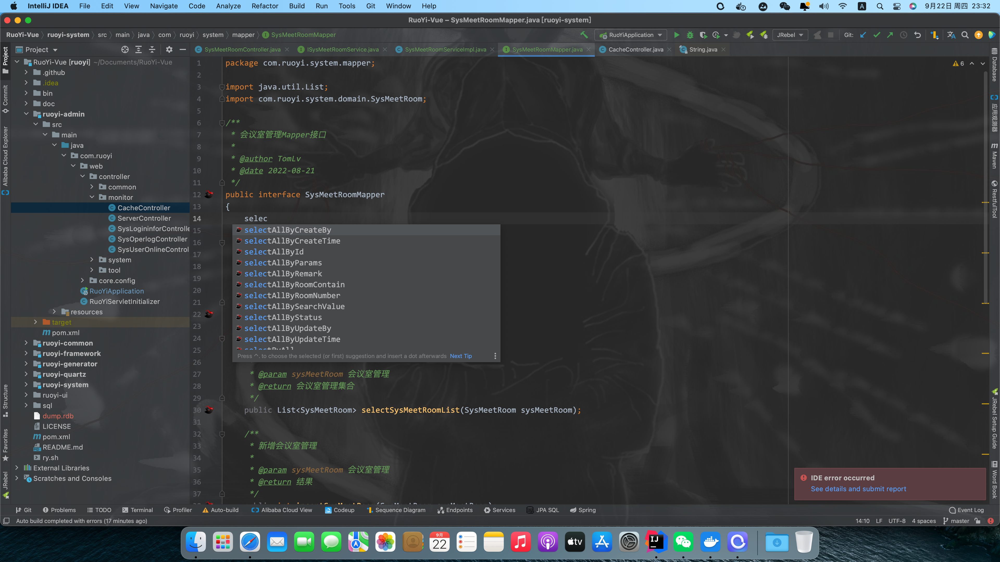
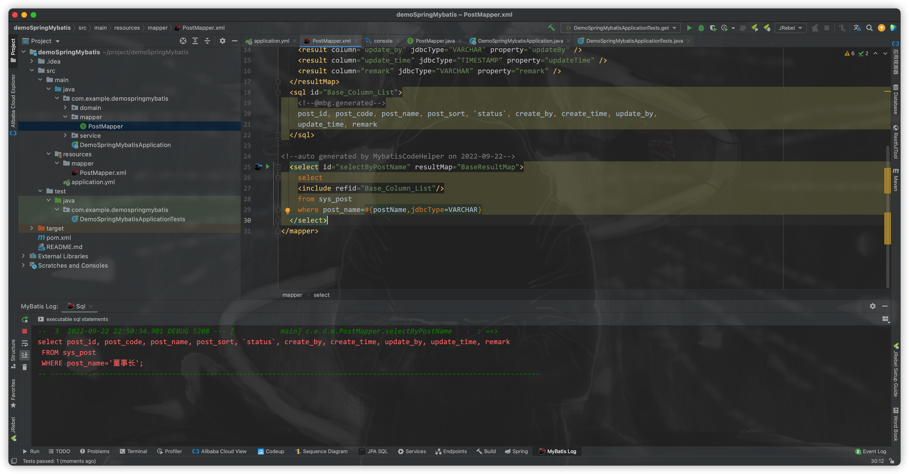
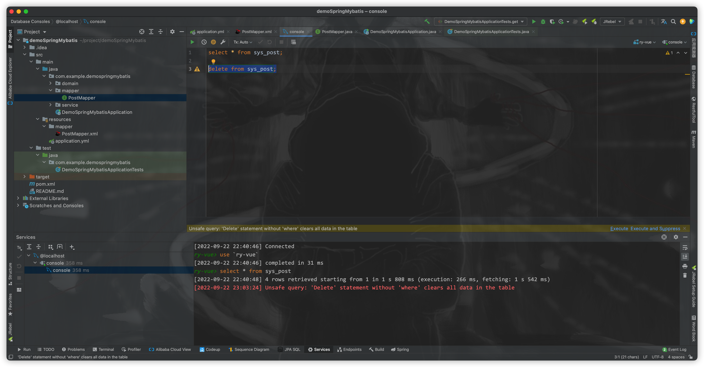
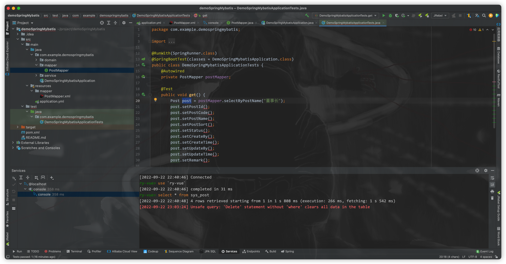
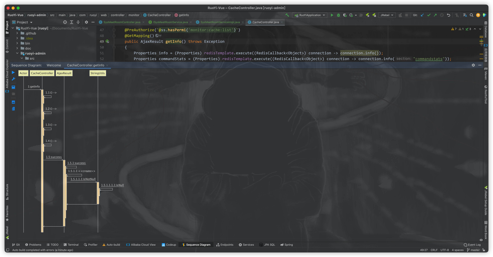
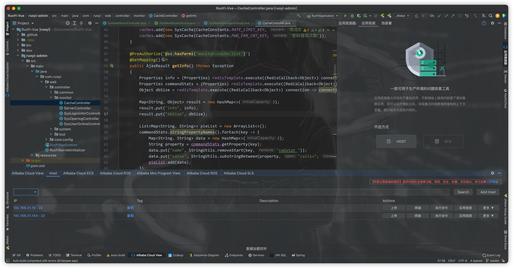
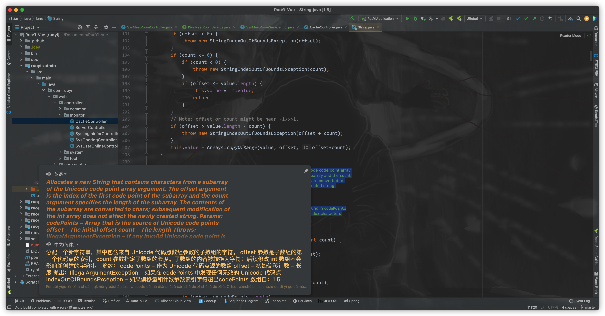
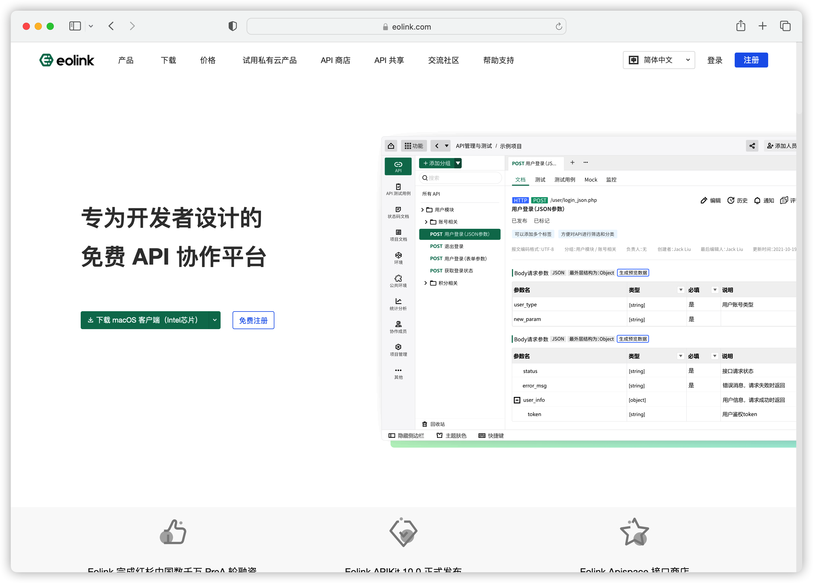
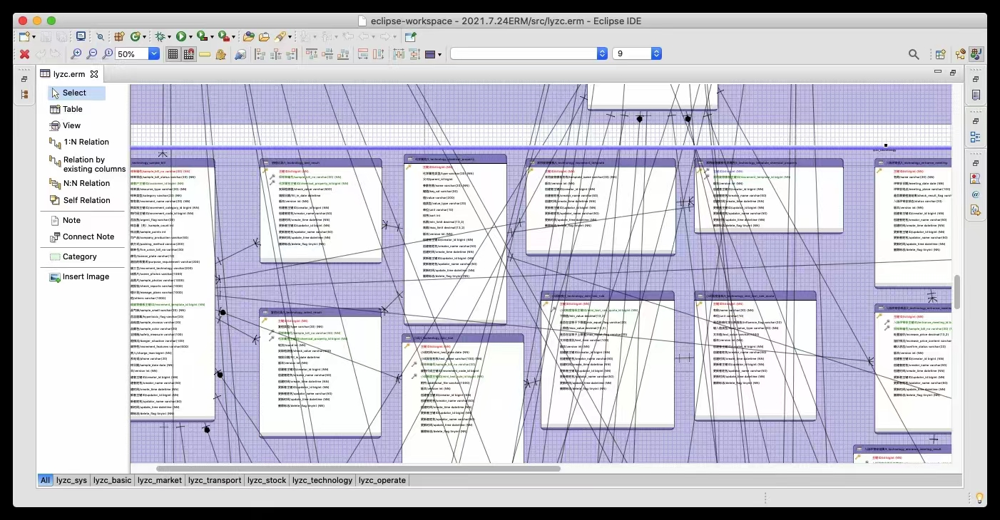

Java工程师必须了解的高速开发方案
Java工程师必须了解的高速开发方案
IDEA插件
mybatisCodeHelperPro
最大限度的减轻Mybatis框架在编写过程中的繁琐性，单表操作时保持灵活性的同时无限的接近于JPA的简洁，使用SpringDataJPA 从DB中获取对象仅仅只需要编写对应的Java代码即可，底层会根据方法名自动拼接Sql.
1 | User findByUsernameAndPassword(String username,String password); |
mybatisCodeHelperPro 可通过同样的方式进行Orm层api命名（可使用阿里巴巴代码规约的OOP规约对其方法进行命名），通过插件在配置文件生成Sql。无限的接近于JPA全自动实现ORM映射的同时保持Mybatis灵活的优点。其余功能包括使用该插件进行CodeFirst方式开发也可以通过连接数据库生成代码,测试Sql，orm对象导航，事半功倍的同时最大限度的规避Sql操作的失误。


详细操作教程：【程序员必备】IDEA中超级好用的MyBatis插件，yyds！_哔哩哔哩_bilibili
下载链接: https://pan.baidu.com/s/1hhppw2VyCTxzP9LIb5gCSg 提取码: gegt
备用链接：https://pan.baidu.com/s/1ed32Y10da6Xcj5RIYKkkFg 提取码：c6rr
Mybatis Log plugin
利用Mybatis框架的日志机制，将控制台sql以完整的形式打印，在调试代码时能够非常方便的观察数据的变化以及准确的定位程序bug。

详细使用说明：[https://blog.csdn.net/LT11hka/article/details/103531653?ops_request_misc=&request_id=&biz_id=102&utm_term=Mybatis%20Log%20plugin&utm_medium=distribute.pc_search_result.none-task-blog-2~all~sobaiduweb~default-1-103531653.142](https://blog.csdn.net/LT11hka/article/details/103531653?ops_request_misc=&request_id=&biz_id=102&utm_term=Mybatis Log plugin&utm_medium=distribute.pc_search_result.none-task-blog-2allsobaiduweb~default-1-103531653.142)v25control,157v15new_3&spm=1018.2226.3001.4187
安装方式： https://blog.csdn.net/yuyu1067/article/details/113743698?ops_request_misc=%257B%2522request%255Fid%2522%253A%2522165648508016781818777997%2522%252C%2522scm%2522%253A%252220140713.130102334..%2522%257D&request_id=165648508016781818777997&biz_id=0&utm_medium=distribute.pc_search_result.none-task-blog-2allbaidu_landing_v2~default-2-113743698-null-null.142v25control,157v15new_3&utm_term=Mybatis+Log+plugin&spm=1018.2226.3001.4187
下载链接：https://pan.baidu.com/s/1eqALLAQMYW-OlwF5mDbGSg 提取码：sjc8
Database
该插件为IDEA自带插件，可以作为所有主流数据库可视化管理工具。与jetbrain全家桶中的企业级数据库管理工具datagrip有着同样的功能以及用户体验，绝大数操作完全相同。在进行DML以及DDL编写时可获得非常智能的提示。在进行Update 或delete等危险操作时缺少条件会在第一时间进行阻断提示。可以非常有效的规避误操作。

GenerateAllSetter
在需要把传入的参数与赋值给Java对象时，通常可采用 modelMapper 或者Spring框架提供的BeanUtils 进行对象赋值。
1 | ObjectTarget objectTarget = modelMapper.map(ObjectTargetDto,ObjectTarget.class); |
但依然会存在部分场景无法使用上述两种方案，例如架构上采用低代码方案亦或是参数值与对象属性之间映射。只能采取set()方法赋值，GenerateAllSetter插件可在第一时间生成对象的所有set()方法，在开发过程中可以有效规避漏掉某一个属性没有写set()方法赋值而导致的逻辑bug。


SequenceDiagram
在业务逻辑复杂的场景下，无论是做Bug修复还是二次开发亦或是在其基础上扩展新模块。都不得不弄清楚已有的代码逻辑，而SequenceDiagram插件则可以将接口的调用关系，整个时序图展示出来，对深入了解项目有很大的帮助。该插件还可将时序图导出，非常适合用于编写开发文档方便后期维护。


Jrebel
使用IDEA最影响效率的问题在于编写代码后无法直接生效不得不重启服务器使新修改的代码生效，虽然Spring等开源社区都已经提出了热部署（既不用重启服务器直接使代码生效）的解决方案，但其可靠性仅仅只是与Eclipse持平。 目前市场上最可靠的热部署插件Jrebel，操作简单可靠，非常适合用于微服务项目启动。

破解操作方法：(141条消息) JRebel插件使用详解_梁云亮的博客-CSDN博客_jrebel
Alibaba Java Coding Guidelines
阿里巴巴代码规约是目前最为全面的一套规范，包括注释以及代码编写方面的规范。虽然是公认的能够最大限度的规避开发风险，然而其内容过多，开发人员无法在开发的过程中一边设计程序一边检查代码以及注释是否符合该规约。这个时候就需要Alibaba Java Coding Guidelines 插件代替人工检查代码是否规范，以此规避风险。

Alibaba Cloud Toolkit
市场上几乎所有好用的SSH终端工具以及文件上传工具都需要付费才能下载使用，而Alibaba Cloud Toolkit则是一款完全免费而且功能强大的SSH终端工具，在运维方面其内置功能可以完美适配阿里云服务器，除了可作为终端命令行工具使用还可以用来上传文件，在开发方面可以快速构建Dubbo或者SpringCloudAlibaba项目。

详细操作教程：Cloud Toolkit阿里云开发者插件工具_免费本地IDE插件工具 - 阿里云 (aliyun.com)
使用指引：使用指引 (aliyun.com)
Translation
定义变量、方法、类、等名称时为了保证代码可读性和可维护性，必须严格遵循阿里巴巴代码规约，既变量、方法等命名需使用符合其语义的单词命名。translation插件可以直接调用谷歌的翻译接口进行翻译功能。在进行jdk源代码阅读时也可用于英文注释翻译，可以帮助使用者深入了解开源技术。


前后端对接
当前主流开发技术栈都是前后端绝对分离，这种场景导致了很多前后端在协调对接方面的问题，无论是postman还是SwaggerUi都是存在很多不足之处，前者在于无法准确的确定后端接口URL以及所需的参数，后者SwaggerUI缺点在于后端代码繁杂，假如需要前端准备完整的Json请求参数而去使用过多的DTO则完全违背低代码开发原则。两者都无法及时告知前端开发人员接口变动消息，也无法在接口测试时进行断言操作，从而导致很多意想不到的线上Bug。而Eolink则是完全为解决这一系列问题而诞生的，其功能包括断言，通知，接口信息分享，线上Bug调试，项目接口文档管理等功能，可以最大限度的规避前后端对接的风险。

官网地址：api接口管理平台api管理系统接口自动化平台-Eolink接口管理 (eolinker.com)
操作教程1：弃用swagger + postman， Eolink 真香 ~ ~_哔哩哔哩_bilibili
操作教程2：API接口开发怎么才能更高效？文档定义、开发联调、测试上线 … Eolink都能帮忙_哔哩哔哩_bilibili
DB设计
数据库设计虽然难度系数不大，但很容易被语法问题绊倒。时间长了即使理论方面的知识掌握的已经非常牢固，却还是无法摆脱固定思维，无法将心思放在DB设计上而是过于注重语法问题。ERmaster是一款Eclipse数据库设计插件,其目的在于可以通过Er图直接生成对应的DDL语句。或者在微服务系统强制解耦合的情况下用于描述数据库之间的对应关系。

安装方法：https://blog.csdn.net/qq_43126276/article/details/84427407?ops_request_misc=%257B%2522request%255Fid%2522%253A%2522165649309416782395334563%2522%252C%2522scm%2522%253A%252220140713.130102334..%2522%257D&request_id=165649309416782395334563&biz_id=0&utm_medium=distribute.pc_search_result.none-task-blog-2allsobaiduend~default-2-84427407-null-null.142v25control,157v15new_3&utm_term=ErMaster%E5%AE%89%E8%A3%85&spm=1018.2226.3001.4187
操作教程1：数据库设计-数据库设计之ERmaster和PowerDesigner的使用_哔哩哔哩_bilibili
操作教程2：https://www.bilibili.com/video/BV1Ev411P7Cg?p=4&vd_source=85a404d3867ac0576be526de4c3d8823
操作教程3：https://www.bilibili.com/video/BV1Ev411P7Cg?p=5&vd_source=85a404d3867ac0576be526de4c3d8823